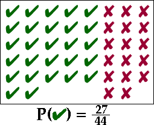

Einen Wert aus einer endlichen Grundgesamtheit ziehen
Zieht man willkürlich Stichproben aus einer Grundgesamtheit, so bedient man sich der Wahrscheinlichkeit. Wird ein Wert aus einer endlichen Grundgesamtheit von N verschiedenen Werten ausgewählt, gilt:
Die Definition kann ausgeweitet werden auf
Grundgesamtheiten, in der
manche Werte mehr als einmal vorkommen.
Besonders, wenn ein Wert aus einer kategorischen Grundgesamtheit
willkürlich ausgesucht wurde, ist die Wahrscheinlichkeit einen
bestimmten Wert zu erhalten so groß wie das Verhältnis
der Werte in der
Grundgesamtheit.
Die Wahrscheinlichkeit, dass ein einziger ausgewählter Wert gleich x ist, ist so groß wie der Anteil dieses Wertes in der Grundgesamtheit.
Kategorisches Beispiel
In der unten aufgeführten Population von 44
kategorischen
Werten gibt es 27 "Erfolg"- und 17 "Misserfolg"-Werte.
Die Wahrscheinlichkeit, dass ein einzelner Wert aus der Grundgesamtheit
gezogen wird, der ein "Erfolgs"-Wert ist, ist daher 27/44.

Haushaltsgröße in Mauritius
Das unten aufgeführte Balkendiagramm zeigt die Größen aller Haushalte in Mauritius aus der Volkszählung 2000. Die dualen Achsen verdeutlichen die Zahl der Haushalte und den Anteil jeder Größe von Haushalten.
Wird ein Haushalt in Mauritius zufällig ausgewählt, ist die Wahrscheinlichkeit, das er eine bestimmte Größe hat, gleich des Anteils von Haushalten mit dieser bestimmten Größe in der gesamten Volkszählung.
Durch Klicken auf die Balken kann man die Wahrscheinlichkeiten ablesen.
Wahrscheinlichkeit, einen von mehreren Werten zu erhalten
Wenn ein Wert als Stichprobe aus einer Grundgesamtheit gezogen
wird,
so ist die Wahrscheinlichkeit einen bestimmten Wert x zu erhalten,
gleich des Anteils
der Werte in der Grundgesamtheit, die gleich x sind. Eine
ähnliche
Definition wird genutzt, um die Wahrscheinlichkeit, dass der Wert der
Stichprobe entweder x,y,....ist.
Die Wahrscheinlichkeit, das ein eintelner Wert der Stichprobe entweder x,y,...ist, ist der Anteil von Werten innerhalb der Grundgesamtheit, die entweder x,y...sind.
Sind diese Werte numerisch, gibt diese Definition
die
Wahrscheinlichkeit einen Wert innerhalb eines Bereiches zu erhalten.
Zum Beispiel: wenn 12 Werte in einer Grundgesamtheit von 100 Werten
unter 3,5 liegen, kann man sagen, dass die Wahrscheinlichkeit einer
Stichprobe einen einzelnen Wert unter 3,5 enthält gleich
12/100 =
0,12 ist. Um dies als Gleichung auszudrücken, nehmen wir das
Symbol X
für den
Stichprobenwert und schreiben:
Prob( X < 3.5 ) = 0.12
Allgemeiner,
Prob( a < X < b ) = Anteil der Werte zwischen a und b.
Weizenerträge
Das unten gezeigte Diagramm zeigt einen verwackelten Dotplot von Weizenerträgen (t pro ha) von allen 60 Höfen in einer Region der USA 1998.
Die Höfe mit Erträgen zwischen 2,5 und 2,8 t pro ha sind hervorgehoben. Die Wahrscheinlichkeit, dass eine Stichprobe eines Hofes zufällig aus denen in der Region gezogen wird, einen Ertrag zwischen 2,5 und 2,8 hat, ist gleich dem Anteil der hervorgehobenen Werte.
Um die Wahrscheinlichkeiten zu sehen, Werte in anderen Spannweiten zu erhalten, muß man über die rechten und linken Ecken des hervorgehobenen Bereiches ziehen.